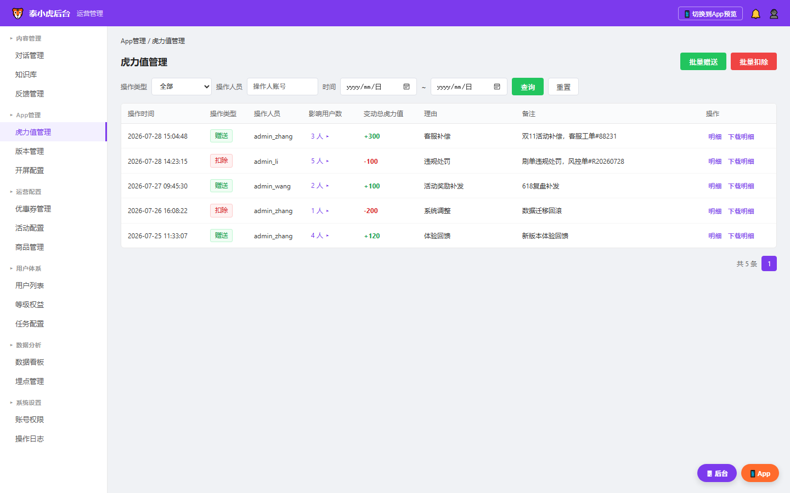
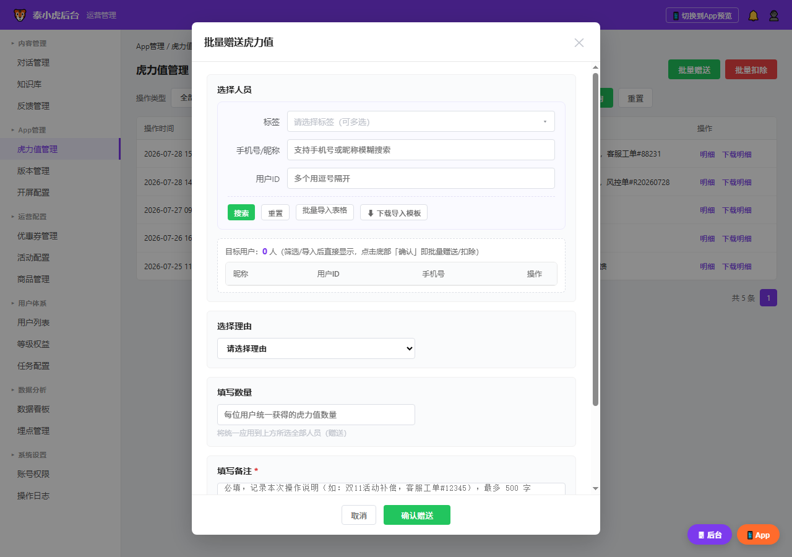
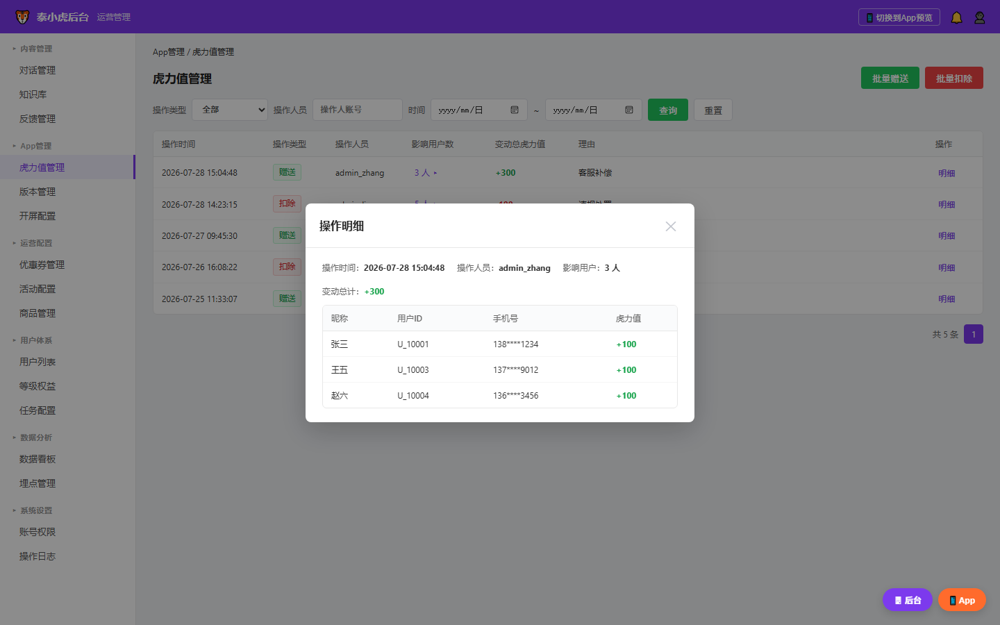
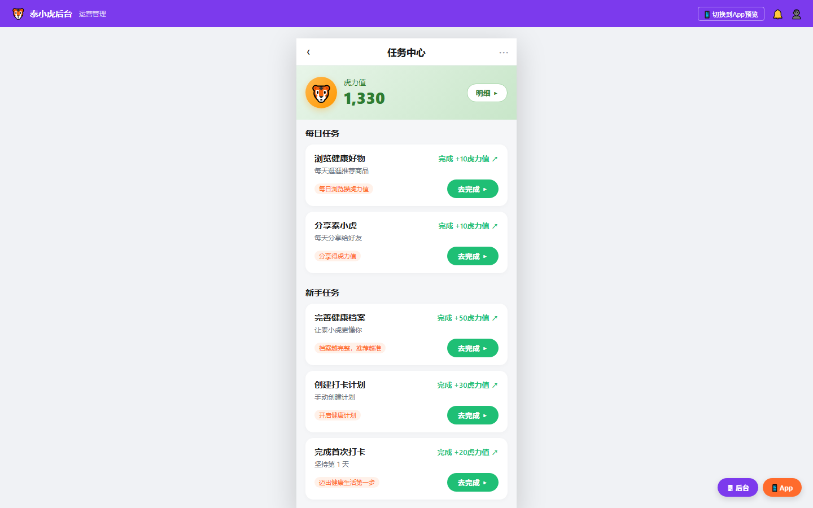
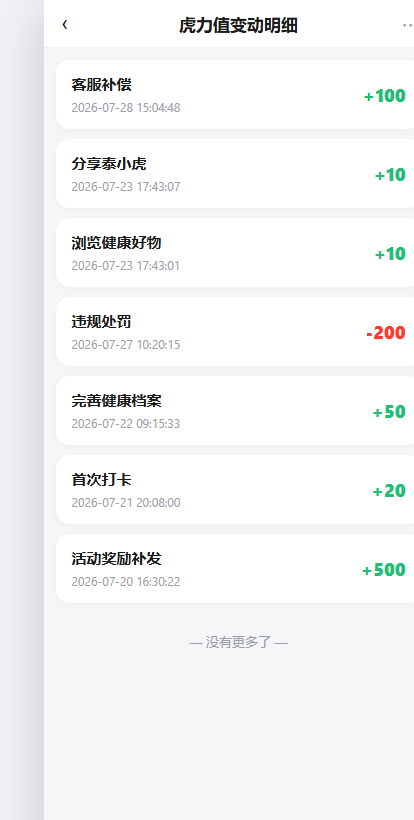

| 版本 | 日期 | 修订人 | 修订内容 | 状态 |
|---|---|---|---|---|
| v1.0 | 2026-07-28 | PM | 初稿终版：平台端后台「虎力值管理」模块 + App 变动记录增强理由展示 | 已定稿 |
| v1.1 | 2026-07-29 | PM | 评审整改：① 批量赠扣新增「标签筛选」（搜索/重置两按钮，点击搜索触发查询）；② 取消二次勾选，筛选/导入直接进目标用户列表，点确认即生效；③ 新增必填「备注」（≤500字，列表+明细展示）；④ 操作记录列表新增「下载明细」文字按钮；⑤ 虎力值明细客户端配色红减绿加（修正 App 端加号误显红、减号误显绿） | 已定稿 |
| v1.2 | 2026-07-29 | PM | 原型二次评审整改：① 批量弹窗筛选区重构为「统一筛选」——标签改为下拉多选、手机号/昵称/用户ID 作为并列筛选项，仅保留一个「搜索」按钮统一触发组合查询（点击搜索时一次性向服务端发起筛选），移除原平铺 checkbox 与按条件单独搜索；② 移除原型内大号紫色步骤序号，仅保留分区标题并优化排版；③ 备注文本框高度上调；④ 保留「重置」与「批量导入表格 / 下载导入模板」 | 已定稿 |
| v1.3 | 2026-07-30 | PM | 评审整改（8 项）：① 活动标签改为单选下拉（枚举取自活动标签体系，非用户行为标签）；② 活动标签与手机号互斥，不可同时作为搜索条件；③ 移除昵称搜索（仅支持手机号精确/模糊查询）；④ 移除用户ID 搜索条件；⑤ 保留批量导入表格 / 下载导入模板；⑥ 移除「其他（自定义理由）」选项，理由仅支持预设字典枚举；⑦ 后管手机号展示取消脱敏，直接明文显示（如 13812341234） | 已定稿 |
| v1.4 | 2026-07-30 | PM | 定稿：活动标签枚举确认定稿为固定 6 项——双11大促 / 周年庆 / 新人专享 / 会员日 / 沉睡唤醒 / 618复盘；移除 PRD 中「@干系人 确认实际枚举」占位符，原型下拉选项即以此为准 | 已定稿 |
当前泰小虎积分体系（后端称「虎力值」）已有完整数据模型（user_points 账户表 + point_transactions 流水表）和 earn/consume 方法，但缺少运营侧手动干预能力：
admin_points.html）为只读展示页，不支持批量操作。本期需求在平台端后台「App管理」页签下新增「虎力值管理」模块，提供批量赠扣能力 + 操作记录追溯；同时增强 App 端变动记录展示，将原任务名替换为后台选择的理由。
| 目标维度 | 具体目标 |
|---|---|
| 业务目标 | 赋予运营批量干预虎力值的能力（赠送/扣除），覆盖补偿、补发、处罚场景。 |
| 用户目标 | App 用户可在变动记录查看每次增减理由（替代模糊「完成xxx任务」）。 |
| 技术目标 | 复用 earn/consume；新增 source='admin' 分支。 |
| 指标 | 定义 | 衡量方式 |
|---|---|---|
| 批量操作成功率 | 后台提交批量赠扣请求的成功比例 | 后端日志统计 |
| 操作记录可追溯率 | 每笔赠扣操作均可通过记录表查到明细（用户清单+各自数值） | 功能验收 |
| App 变动记录理由覆盖率 | 变动记录中含「理由」列的比例（目标 100%） | UI 验收 |
hlz-req.html）原图，禁止在 PRD 中自行简化、重绘或修改节点 / 连线。若与正文不一致，须报用户确认后统一修正，不得 AI 擅自篡改。
📎 权威来源：《虎力值管理后台·需求梳理图集》§二。以下泳道图与梳理文件一致，节点/阶段/泳道一一对应。
📎 权威来源：《虎力值管理后台·需求梳理图集》§三。
earn_points，source 设为 'admin'；步骤 7 流水额外写入 reason + operator；步骤 10~11 为 App 端增强——变动记录展示增减数量+时间+理由三列。📎 权威来源：《虎力值管理后台·需求梳理图集》§四。
consume_points，available 可为负数；流水 points 存负值。| 层级 | 组件 | 说明 |
|---|---|---|
| 前端展示层 | 平台端后台「虎力值管理」页 + App「变动记录」页 | 平台端：列表 + 批量弹窗 + 明细弹窗；App：任务中心 + 变动明细 |
| 后端配置层 | Admin Grant/Deduct API | 新增接口，包裹 earn/consume 方法，source='admin' |
| 数据层 | user_points + point_transactions | 既有表新增 source='admin'，落库 reason/operator。 |
| 理由字典 | 预设枚举（已有能力） | 理由来源取自系统「字段管理」中的赠扣理由字典（既有能力，本期仅引用不新建配置页），预设枚举见 §4.2.2 |
本需求涉及的状态实体及流转：
说明：本 PRD 为需求文档，操作按钮清单见 §4.1.2「功能按钮总表」（批量赠送 / 批量扣除 / 查询重置 / 明细下钻）；状态机仅描述业务实体终态与流转，无中间操作态。
| 实体 | 状态枚举 | 流转规则 |
|---|---|---|
| 操作记录 | 已完成（默认终态） | 创建即完成，无中间态。操作一旦提交成功即为不可变更的审计记录。 |
| 用户虎力值余额 | 正数 / 零 / 负数 | 赠送 available += M；扣除 available -= M（可负）。 |
涉及终端明细：本期仅涉及 平台端后台（新增「虎力值管理」模块）与 App 客户端（变动记录增强）；不含商家端后台 / H5 / 小程序。
需求影响范围：① 平台端后台「App 管理」页签（新增子模块）；② 后端积分服务（新增 Admin Grant/Deduct API，复用 earn/consume，新增 source='admin' 分支）；③ 数据层 user_points / point_transactions（新增 reason/operator 落库）；④ App 端「变动记录」页（展示增强）；⑤ 理由字典（来源于系统「字段管理」，既有能力，仅引用不新建）。不影响优惠券、订单、用户画像等其他模块。
原型截图：

页面位于「App管理」页签下，主体为赠扣操作记录表格，顶部有查询筛选区和操作按钮区。
列表字段表：
| 字段名称 | 需求说明 | 备注 |
|---|---|---|
| 操作时间 | 该次批量操作的提交时间，格式 yyyy-MM-dd HH:mm:ss | 取《操作记录表》created_at |
| 操作类型 | 赠送（绿色标签）/ 扣除（红色标签） | 取《操作记录表》operation_type |
| 操作人员 | 执行该操作的后台管理员账号 | 取《操作记录表》operator |
| 影响用户数 | 本次操作影响的用户总数，可点击下钻查看明细 | 关联《操作明细表》count |
| 变动总虎力值 | 本次所有用户变动合计：赠送显绿正值，扣除显红负值。 | SUM《操作明细表》points |
| 理由 | 操作时选择的理由文本（来自预设字典，不支持自定义） | 取《操作记录表》reason |
| 备注 | 操作时填写的本次操作说明（必填，≤500 字），超长截断显示，鼠标悬停看全文 | 取《操作记录表》remark |
| 操作 | 「明细」按钮（弹出该操作受影响用户清单）+「下载明细」文字按钮（导出本次操作明细 CSV） | 明细触发明细弹窗；下载明细触发表单下载 |
功能按钮总表：
| 功能说明 | 显示位置 | 权限 | 前置条件 |
|---|---|---|---|
| 批量赠送 | 列表上方右侧，绿色主按钮 | 平台管理员（虎力值管理权限点） | 无 |
| 批量扣除 | 列表上方右侧，红色次按钮 | 平台管理员（虎力值管理权限点） | 无 |
| 查询 / 重置 | 列表上方筛选栏 | 平台管理员（虎力值管理权限点） | 无 |
| 明细下钻 | 每行操作记录「明细」按钮 | 平台管理员（虎力值管理权限点） | 该行影响用户数 > 0 |
| 下载明细 | 每行操作记录「下载明细」文字按钮（与「明细」并列） | 平台管理员（虎力值管理权限点） | 该行影响用户数 > 0 |
查询条件规格：
| 查询条件 | 控件类型 | 选项来源 / 说明 | 查询行为 |
|---|---|---|---|
| 操作类型 | 下拉选择 | 全部 / 赠送 / 扣除 | 精确匹配 |
| 操作人员 | 文本输入 | 支持模糊搜索管理员账号 | LIKE 匹配 |
| 时间范围 | 日期范围选择器 | 开始日期 ~ 结束日期 | 范围闭区间查询 created_at |
逐步操作逻辑：
GET /api/admin/point-operations/{id}/details 拉取该次操作的全部受影响用户，生成为 CSV（含 昵称 / 用户ID / 手机号 / 虎力值变动 四列）并触发浏览器下载，文件名形如 操作明细_{id}_{赠送|扣除}.csv。异常分支：
数据来源：列表数据取《操作记录表》（admin_point_operations），后端接口 GET /api/admin/point-operations 返回。
原型截图：

点击「批量赠送」或「批量扣除」按钮后弹出此面板。面板包含五个区域：统一筛选区、目标用户列表、理由选择区、数量填写区、备注区。统一筛选区提供两种互斥的人员筛选方式——① 活动标签（单选下拉，枚举取自活动标签体系）；② 手机号（精确/模糊查询）。两者不可同时作为搜索条件；运营选好其中一种后点击唯一「搜索」按钮触发查询，命中或导入的用户统一进入「目标用户列表」直接作为待操作名单（无需二次勾选确认）。不支持昵称、用户ID 搜索；理由仅支持预设字典枚举（不支持自定义）。
弹窗结构分区：
| 区域 | 字段/元素 | 功能逻辑说明 | 备注 |
|---|---|---|---|
| 统一筛选区 | 筛选条件组（活动标签单选下拉 + 手机号）+「搜索」「重置」 | 活动标签与手机号互斥，二选一搜索：① 活动标签为「单选下拉」，点击展开选择一个活动标签（双11大促/周年庆/新人专享/会员日/沉睡唤醒/618复盘，已确认固定枚举），选中后点击「搜索」调用 GET /api/admin/users?tag=活动标签 返回该标签下用户；② 手机号输入框支持精确/模糊查询，点击「搜索」调用 GET /api/admin/users?phone=手机号 返回匹配用户。两者同时填写时点「搜索」→ 提示「活动标签与手机号不可同时搜索，请只保留一种方式」并拦截。命中用户直接加入目标用户列表。点击「重置」清空筛选输入并仅移除由筛选命中的用户（导入用户保留）。 | 仅「搜索」「重置」两个按钮；不支持昵称、用户ID 搜索；活动标签枚举：双11大促/周年庆/新人专享/会员日/沉睡唤醒/618复盘（已确认固定枚举） |
| — | 批量导入表格入口 | 上传 CSV/Excel 文件，解析后命中用户直接加入目标用户列表（不再二次勾选「确认选中」），每行至少填一个字段（用户ID / 昵称 / 手机号） | 提供「下载导入模板」按钮，模板仅含「用户ID / 昵称 / 手机号」三列 |
| 目标用户列表 | 统一用户清单表格 | 标签筛选命中 + 导入 两类用户合并展示为一张清单，直接作为本次待操作名单；每行带「移除」可剔除；含计数「目标用户：N 人」 | 上限 9,999（已确认）；点击底部「确认赠送/确认扣除」即对清单全部用户生效 |
| 理由选择区 | 理由下拉框 | 预设理由枚举（来自字段管理中的已有理由字典），枚举明细见本表下方清单；仅支持预设枚举，不支持自定义输入 | 理由字典来源于系统「字段管理」（既有能力），本期不新增配置页 |
| 数量填写区 | 虎力值数量输入框 | 数字输入，统一应用于目标用户列表每位用户 | 赠送：正整数；扣除：正整数（后端存为负值） |
| 备注区 | 备注文本框 | 必填，记录本次操作说明（如活动背景、工单号），最多 500 字，超出禁止输入 | 取《操作记录表》remark；列表与明细弹窗均展示 |
| 操作按钮 | 确认赠送 / 确认扣除 | 根据入口按钮区分，提交时对目标用户列表全部用户生效 | 提交前校验（见下方逻辑） |
| — | 取消 | 关闭弹窗，清空目标用户列表与已填内容 | — |
预设理由枚举（已有字典，非本期新建，仅支持枚举、不支持自定义）：客服补偿 / 活动奖励补发 / 体验回馈 / 违规处罚 / 系统调整 / 误操作退回。
逐步操作逻辑：
GET /api/admin/users?tag=活动标签 或 GET /api/admin/users?phone=手机号 向服务端发起查询，返回用户集合。统一筛选与批量导入两种方式相互独立又合并生效：最终「目标用户列表」= 筛选命中 ∪ 导入，点击底部「确认赠送 / 确认扣除」即对该清单全部用户执行操作，无需二次勾选确认。
「确认赠送」逐步操作逻辑：
/api/admin/points/grant。earn_points(user_id, points, source='admin')，更新 user_points.available += points；同时 INSERT 一条 point_transactions 记录（source='admin', points=+N, reason, operator, balance_after）。admin_point_operations 记录（operation_type='grant', total_points=+N*count, reason, remark, operator, affected_count=count）。「确认扣除」逐步操作逻辑：
/api/admin/points/deduct，参数同上（points 为正整数，后端取负；含 remark）。consume_points(user_id, points, source='admin')。不校验余额，user_points.available -= points 可为负数。异常分支：
计算公式：变动总虎力值 = 单用户数量 × 已选用户数。赠送时为正值，扣除时为负值。
数据来源：人员检索调 GET /api/admin/users/search；提交分别调 grant/deduct API；理由枚举取自有字典（非本期新建）。
原型截图：

点击列表中某行的「影响用户数」或「明细」按钮后弹出，展示该次操作影响的所有用户及其各自的虎力值变动。
弹窗头部信息：
| 字段 | 说明 | 数据来源 |
|---|---|---|
| 操作时间 | 该次操作的提交时间 | 取《操作记录表》created_at |
| 操作人员 | 执行操作的管理员账号 | 取《操作记录表》operator |
| 影响用户 | 受影响的总人数 | COUNT《操作明细表》 |
| 变动总计 | 所有用户变动合计（±） | SUM《操作明细表》points |
| 备注 | 该次操作的备注说明（必填，≤500 字） | 取《操作记录表》remark |
用户明细列表字段表：
| 字段名称 | 需求说明 | 备注 |
|---|---|---|
| 昵称 | 用户昵称 | 取《用户表》nickname |
| 用户ID | 系统用户唯一标识 | 取《用户表》user_id |
| 手机号 | 用户手机号（后管明文展示，不做脱敏：13812341234） | 取《用户表》phone |
| 虎力值 | 该用户本次变动数量，赠送显示绿色正值，扣除显示红色负值 | 取《操作明细表》points |
逐步操作逻辑：
GET /api/admin/point-operations/{id}/details。数据来源：明细数据取《操作明细表》（admin_point_operation_details），通过 operation_id 关联查询。
沿用现有功能。「我的」页虎力值总额展示 + 任务中心页（每日任务 / 新手任务列表）均为既有功能，本期不做改动。进页时拉取服务端最新虎力值余额（确保后台赠扣后反映正确金额）。
原型截图：

原型截图：

从任务中心点击「明细 ▸」进入。本期增强：每条记录展示「理由 + 时间 + 增减数量」三列，原「完成xxx任务」文本替换为后台操作时选择的理由。
变动记录列表字段表：
| 字段名称 | 需求说明 | 备注 |
|---|---|---|
| 理由 | 变动原因文本。任务类显示任务名；admin 类显示后台操作理由。 | 取 point_transactions；任务类=原名，admin=后台理由。 |
| 时间 | 变动发生时间，格式 MM-dd HH:mm | 取《point_transactions》created_at |
| 增减数量 | 虎力值变动数值。增加显绿正值，减少显红负值。 | 取《point_transactions》points |
展示样式与空/异常态：
逐步操作逻辑：
GET /api/user/point-transactions（带分页参数），后端返回流水列表（含 reason 字段）。source 字段——若为 'admin' 则直接显示 reason（后台操作理由）；若为 'task' 则显示对应任务名称（原有逻辑不变）。数据来源：流水数据取《point_transactions》表，通过 user_id 关联当前登录用户过滤。
本需求埋点事件与属性严格遵循《泰小虎埋点规范 v2.3》（在线全文，含完整 30 事件/属性/页面枚举/友盟约束）。
本期涉及事件清单：
| 事件英文名 | 事件显示名 | 所属层 | 平台 | 触发时机 | 必含上报参数(友盟中文名) | 备注 |
|---|---|---|---|---|---|---|
| 本期暂不埋点（后续有统计诉求再补，不新增 admin_operate 事件） | ||||||
| — | — | — | 平台端后台 | 运营点击「确认赠送」 | 操作类型、理由、影响用户数、变动总量 | 已确认：本期不埋点，后续补 |
| — | — | — | 平台端后台 | 运营点击「确认扣除」 | 同上 | 可与赠送合为同一事件，以操作类型区分 |
| — | — | — | App | 用户查看变动记录 | — | 若已有 page_view 事件覆盖则不需单独埋 |
注：以上事件清单为初步评估，具体事件定义须严格从《泰小虎埋点规范 v2.3》既有 30 事件目录中选取或走新增评审。禁止凭空编造事件英文名或属性变量名。
| # | Given（前提） | When（操作） | Then（结果） |
|---|---|---|---|
| AC-01 | 运营已登录平台端后台且有虎力值管理权限 | 进入「App管理」→「虎力值管理」页签 | 页面正常加载，显示操作记录列表（可为空），顶部有「批量赠送」「批量扣除」按钮 |
| AC-02 | 在虎力值管理页面 | 点击「批量赠送」→选3用户→理由「客服补偿」→填100→确认 | 提示赠送成功（共 3 位用户）；列表新增赠送记录（3人/+300/客服补偿）。 |
| AC-03 | 在虎力值管理页面 | 点击「批量扣除」→选1用户(余额50)→理由「违规处罚」→填200→确认 | 提示已扣除 200；用户余额 -150（允许负数）；列表新增扣除记录。 |
| AC-04 | 操作记录列表有数据 | 点击某条记录的「明细」按钮 | 弹出明细弹窗，显示该操作影响的所有用户（昵称/ID/手机号/各自变动值） |
| AC-05 | 在批量操作弹窗 | 手机号输入框输入「13800001111,13800002222」回车 | 两个手机号对应的用户同时添加到已选人员列表 |
| AC-06 | 在批量操作弹窗 | 点击「下载导入模板」 | 下载 Excel 模板（含「用户ID / 昵称 / 手机号」三列表头） |
| AC-07 | 打开批量赠送弹窗 | 在「活动标签」单选下拉选「双11大促」，同时在手机号框输入号码 → 点「搜索」 | 提示「活动标签与手机号不可同时搜索，请只保留一种方式」，查询被拦截；仅保留一种方式时正常返回命中用户 |
| AC-08 | App 用户已被后台赠送 100 虎力值（理由=客服补偿） | 进入 App「任务中心」→ 点击「明细 ▸」 | 首条显示：理由=客服补偿，时间=操作时间，增减=+100（绿色）。 |
| AC-09 | App 用户已被后台扣除 200 虎力值（理由=违规处罚） | 进入 App 变动记录页 | 列表中可见一条记录：理由=「违规处罚」，增减=「-200」（红色） |
| AC-10 | 在虎力值管理页面 | 按操作类型筛选「扣除」+ 时间范围「本周」 | 列表仅显示本周内的扣除类型记录 |
| AC-11 | 打开批量赠送弹窗 | 在「活动标签」单选下拉选「双11大促」→ 点击「搜索」 | 目标用户列表出现该标签命中的用户（去重）；点击「重置」→ 标签清空且由筛选命中的用户被移除，导入用户保留 |
| AC-12 | 在批量操作弹窗 | 选好用户与理由，备注留空 → 点击「确认赠送」 | 提示「请填写备注（必填，最多 500 字）」，提交被拦截；填写 501 字 → 提示「备注超出 500 字上限」 |
| AC-13 | 操作记录列表有数据 | 点击某行「下载明细」文字按钮 | 浏览器下载 CSV（昵称/用户ID/手机号/虎力值变动 四列），文件名形如「操作明细_1_赠送.csv」 |
| 检查项 | 结论 / 处理方式 |
|---|---|
| 网络异常（弱网/断网/500） | 网络异常→提示「网络异常」；不自动重试，以实际结果为准。 |
| 未登录 / 无权限 | 未登录跳转登录页；无虎力值管理权限 → 页面显示「无权访问」 |
| 空状态 | 操作记录空→「暂无操作记录」；人员空确认→「请至少选一位用户」。 |
| 极限值 | 人数上限 ≤ 9,999（已确认）；数量上限 ≤ 99,999（已确认）；理由：仅预设字典枚举，不支持自定义输入；备注 ≤ 500 字（必填）；单次下载明细行数上限 ≤ 5,000 |
| 并发防重 | 提交后立即 disabled 防重复；后端按 request_id 幂等去重（已确认：重复提交返回首次结果，杜绝重复扣款）。 |
| 扣除负数余额 | 允许扣成负数不阻拦；负数余额 App 以红色 +「-」号展示，下方小字提示「虎力值不足，部分权益将受限」（已确认）。 |
| 逆向流 / 撤销 | 本期不做撤销/回退功能。误操作可通过再次赠送/扣除修正（产生新的操作记录） |
本期所有待确认项均已确认闭环，无遗留待确认项，故本栏目不再罗列明细。